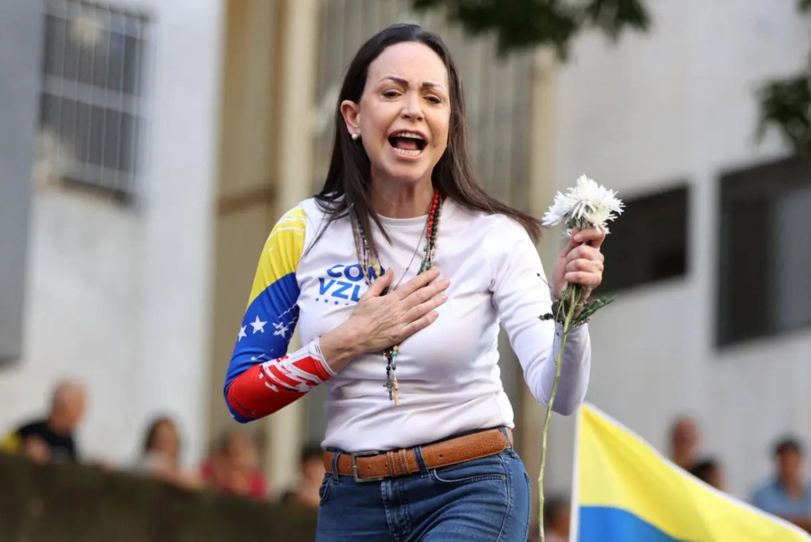

Nobel da Paz atribuído à líder da oposição venezuelana, María Corina Machado
O Prémio Nobel da Paz 2025 foi atribuído a María Corina Machado a 10 de outubro. É a primeira venezuelana a receber o galardão e foi distinguida "pelo trabalho incansável na promoção dos direitos democráticos do povo da Venezuela".
Por Joana Araújo Cardoso

María Corina Machado | Al Día NewsO Comité Norueguês do Nobel destacou Machado pelo seu “trabalho incansável na promoção dos direitos democráticos do povo da Venezuela e pela sua luta para alcançar uma transição justa e pacífica da ditadura para a democracia". “Foi uma escolha de votos em vez de balas”, referiu o Comité, citando a própria vencedora.
O presidente do Comité, Jørgen Watne Frydnes, descreve-a como “um exemplo extraordinário de coragem civil na América Latina” e realça o seu papel unificador numa oposição antes profundamente dividida.
Segundo a agência Reuteurs, a laureada disse a Kristian Berg Harpviken, secretário do órgão responsável pelo prémio, que “este era um prémio para todo um movimento, o movimento na Venezuela que lutou pela democracia”.
Quem é María Corina Machado?
María Corina Machado, de 58 anos, nasceu em Caracas e é uma das figuras mais influentes da oposição ao regime de Nicolás Maduro. Foi deputada da Assembleia Nacional da Venezuela entre 2011 e 2014 e fundou a “Súmate” em 2002, uma organização não-governamental (ONG) promotora do desenvolvimento democrático.
Em 2024, María Corina Machado foi impedida de concorrer às eleições presidenciais, não tendo a oportunidade de enfrentar o Presidente Nicolás Maduro, que permanece no cargo há 12 anos. A líder da oposição vive clandestinamente na Venezuela desde então.
A decisão não é unânime
Após a nomeação da vencedora, o Conselho da Paz norueguês anunciou que não organizará o cortejo com tochas por Oslo, que ocorre tradicionalmente no dia da entrega do Prémio Nobel da Paz. A organização justifica a decisão dos elementos, que não acreditam "que a laureada deste ano esteja alinhada com os valores fundamentais do Conselho de Paz norueguês e dos seus membros".
A Aliança Norueguesa de Justiça Venezuelana, uma organização não-governamental que trabalha "pela liberdade, a democracia e os direitos humanos", anunciou que assumirá a organização do cortejo deste ano.